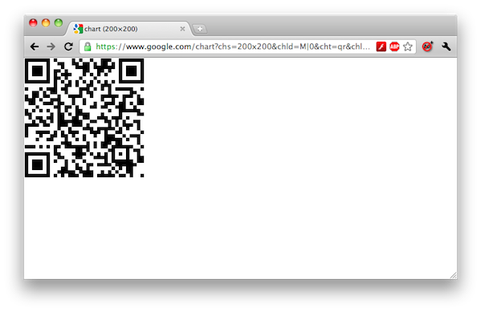

Two factor user authentication with Google Authenticator
Google just made its Google Authenticator widely available, so it’s a good way to make your Webby extra secure with two factor authentication.
In case you’re not familiar with the term, this form of authentication requires something you have (in this case your mobile phone) and something you know (your password).
You’ll need either an iPhone, an Android enabled device or a Blackberry.
Prerequisites
Before starting, go download and install the Google Authenticator in your phone.
Installing Google Authenticator on Ubuntu 10.04
First you need to install three prerequisites: gcc, mercurial and libpam0g-dev (make sure you either execute this steps as root or use sudo):
$ apt-get update $ apt-get -yy install gcc mercurial libpam0g-dev
Now let’s clone the repo and install it:
$ cd ~ $ hg clone https://google-authenticator.googlecode.com/hg/ \ google-authenticator $ cd google-authenticator/libpam $ make install
You should see something like this:
... some gcc compilation output ...
cp pam_google_authenticator.so /lib/security
cp google-authenticator /usr/local/bin
sudo chmod 755 /lib/security/pam_google_authenticator.so \
/usr/local/bin/google-authenticator
Configuring Google Authenticator
First, edit /etc/ssh/sshd_config and change the ChallengeResponseAuthentication from no to yes, here:
# Change to yes to enable challenge-response passwords (beware issues with # some PAM modules and threads) ChallengeResponseAuthentication no
It should now be:
# Change to yes to enable challenge-response passwords (beware issues with # some PAM modules and threads) ChallengeResponseAuthentication yes
Now, change the PAM configuration to include the Google Authenticator module. Edit /etc/pam.d/common-auth and insert a new line after this comment:
# here are the per-package modules (the "Primary" block) auth [success=1 default=ignore] pam_unix.so nullok_secure # here's the fallback if no module succeeds
Leaving it this way:
# here are the per-package modules (the "Primary" block) auth required pam_google_authenticator.so auth [success=1 default=ignore] pam_unix.so nullok_secure # here's the fallback if no module succeeds
User Configuration
Create a configuration for the current shell user:
$ google-authenticator https://www.google.com/chart?chs=200x200&chld=M|0&cht=qr&chl=otpauth://totp/root@ some#some%3Fsecret%3DPKRTA4H5GLN7OTLA Your new secret key is: PKRTA4H5GLN7OTLA Your verification code is 613177 Your emergency scratch codes are: 80419043 52322813 46557473 35541313 66835603 Do you want me to update your "~/.google_authenticator" file (y/n) y Do you want to disallow multiple uses of the same authentication token? This restricts you to one login about every 30s, but it in creases your chances to notice or even prevent man-in-the-middle attacks (y/n) y
Now, copy and paste the generated URL to your browser and a QRCode will be generated:

Open the Google Authenticator app on your phone, choose Scan Barcode and point the camera to your browser. A new key should be added automatically to your list. This code will change every 30 seconds.
If you’re still unsure how to use your phone’s app, please check this step by step instructions on Google Accounts help.
Also, save the scratch codes, they can be used when you don’t have your phone available.
You can repeat this steps for each user you want to add two factor authentication to.
Restarting ssh
Now save and exit your editor and restart ssh daemon. IMPORTANT: do not close this ssh session after restarting the ssh service.
$ /etc/init.d/ssh restart * Restarting OpenBSD Secure Shell server sshd [ OK ]
Now open another ssh session and try to log in. You should now be prompted for the Verification code and your Password. Enter the code as it appears on your phone, and your usual password for the user:
$ ssh root@100.200.100.200 Verification code: Password: Linux ahost 2.6.32-24-generic-pae #39-Ubuntu SMP Wed Jul 28 07:39:26 UTC 2010 i686 Ubuntu 10.04.1 LTS Welcome to Ubuntu! * Documentation: https://help.ubuntu.com/ System information as of Sat Feb 19 01:06:03 EST 2011 System load: 0.0 Processes: 105 Usage of /: 30.6% of 4.85GB Users logged in: 1 Memory usage: 44% IP address for eth0: 100.200.100.200 Swap usage: 3% Graph this data and manage this system at https://landscape.canonical.com/ root@ahost:~#
If by any chance the authentication failed after a couple of tries, it’s recommended that you undo the changes you’ve made to /etc/ssh/sshd_config and to /etc/pam.d/common-auth, and restart SSH one more time. The authentication method should revert to password-only (or publickey, depending on what you had before).
See also
- Installing and Configuring ufw for securing your Webby;
Further reference
- Google Authenticator page on Google Code;
- Turning on 2-step verification: Installing Google Authenticator on Google Accounts help;